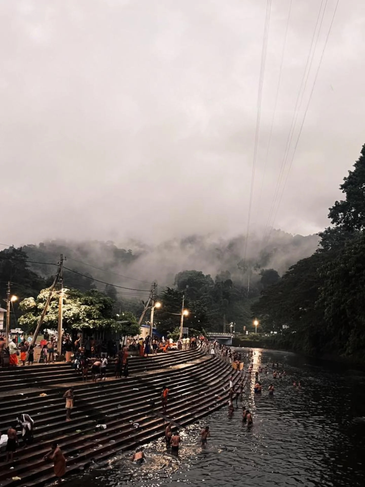
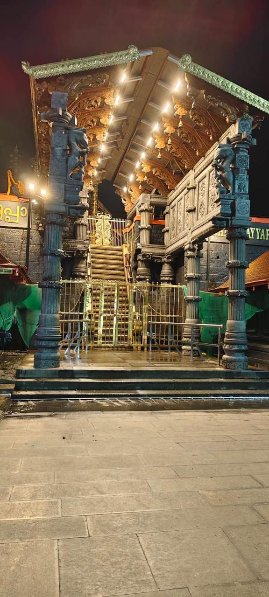

09 JAN 2026
Uthiram
A Sacred Day
A Sacred Path. A Divine Presence.
A Community United in Devotion.
Sacred dates, Uthiram, Sreekovil openings and important events.
→Register for prasadam. Selected devotees are notified and prasadam is shipped.
→Walk of devotion, faith and surrender to Lord Ayyappa.
→Short divine moments shared with love and devotion.
→Watch spiritual videos, discourses and temple experiences.
→Divine photos from Sabarimala and our journeys.
→Thathwamasi is the digital home of Sarvam Sabarigireesha, created to inspire devotees, share divine content, document sacred journeys and build a global community of Ayyappa bhaktas.
Know More About Us

A visual guide to the sacred pilgrimage — from Vratham and Irumudi Kettu through Pampa and the eighteen sacred steps to Sannidhanam.
Explore JourneyFree monthly registration. When prasadam is available, selected devotees are contacted and the prasadam is sent to the registered delivery address.
Full delivery address is required because the prasadam has to be shipped.
No purchase is required. One registration per devotee per month.
Watch devotional videos, Ayyappa stories, Harathi, Padi Pooja and pilgrimage visuals on our YouTube channel.
▶ YouTubeSubscribe for updates, new videos, events and spiritual content.